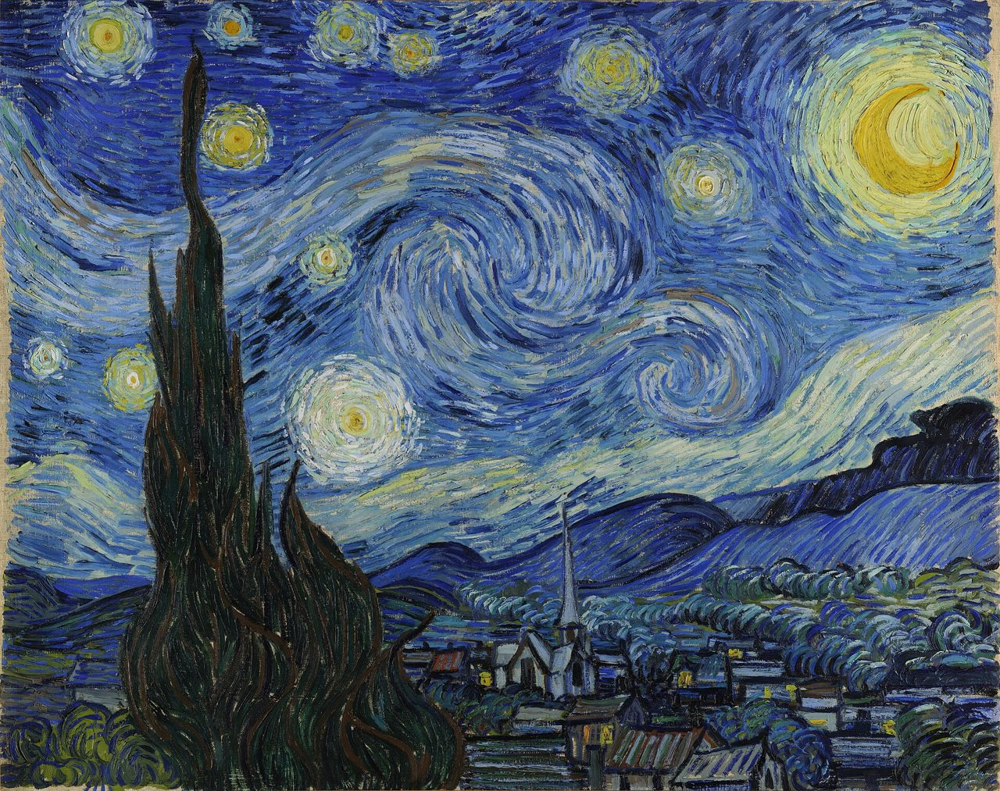

藝術101名畫背後的故事 EP14
星夜
梵谷・1889

這片夜空，是從療養院的窗戶看出去的。
1889，聖雷米
那年 5 月，梵谷自願住進法國南部聖雷米的聖保羅療養院。他臥室的窗戶朝東，看得到圍牆、麥田和遠山。這片風景，他前後畫了至少二十一次。
真實與想像
6 月，他在一樓畫室裡畫下日出前的天空。柏樹右邊最亮的星是金星，當時黎明前真的看得到。但畫裡的村莊從窗戶看不到，是他根據另一張素描加進去的；柏樹也被放大、拉近。
他自己不滿意
同年 11 月，他在給畫家貝納的信裡說這幅畫是「失敗」。1941 年，它進入紐約現代藝術博物館，從此成為館內最受矚目的作品之一。
下次看到它，先看這裡
柏樹右邊的金星 最亮那顆星，據考是黎明前的金星
火焰般的柏樹 被放大拉近，像火焰往上竄
想像的村莊 窗外看不到，依另一張素描加入
作品資料
梵谷（Vincent van Gogh）
《星夜》The Starry Night，1889
油彩、畫布 73.7 × 92.1 公分
紐約 現代藝術博物館（MoMA）
《星夜》The Starry Night，1889
油彩、畫布 73.7 × 92.1 公分
紐約 現代藝術博物館（MoMA）